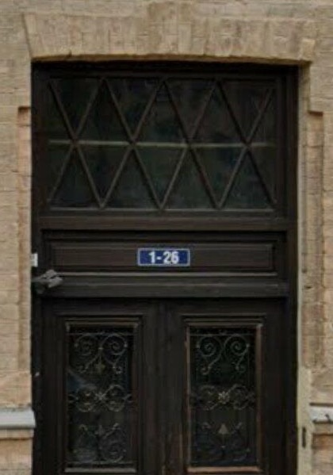

Ērgļu zobārstniecība
Prakse Rīgas centrā, kurā pieņem zobārsts Didzis Ērglis. Zobu ārstēšana, protezēšana, implanti un mutes higiēna. Uzņēmums reģistrēts 1993. gadā. Стоматология в центре Риги, где принимает доктор Дидзис Эрглис. Лечение зубов, протезирование, импланты и гигиена полости рта. Компания зарегистрирована в 1993 году. A dental practice in central Riga where dentist Didzis Ērglis sees patients. Dental treatment, prosthetics, implants and oral hygiene. The company was registered in 1993.
Kā atrast ieeju un kad prakse strādāКак найти вход и часы работыHow to find the entrance, and the hours
- IeejaВходEntrance
- Koka durvis ar numuru 1–26
Prakse ir 1. stāvāДеревянная дверь с номером 1–26
На 1-м этажеThe wooden door numbered 1–26
On the ground floor - Darba laiksЧасы работыHours
- P–C 8:30–18:00
Pk pēc pierakstaПн–Чт 8:30–18:00
Пт по записиMon–Thu 8:30–18:00
Fri by appointment
„atsaucība, viegla roka, profesionalitāte”
Bruno, atsauksme vietnē DentaTOP.lv
«отзывчивость, лёгкая рука, профессионализм»
Bruno, отзыв на DentaTOP.lv, перевод
“responsiveness, a light hand, professionalism”
Bruno, review on DentaTOP.lv, translated
PakalpojumiУслугиServices
- Zobu ārstēšanaЛечение зубовDental treatment
- ProtezēšanaПротезированиеProstheticstostarp zobu kroņiв том числе коронкиincluding crowns
- ImplantiИмплантыImplantsStraumann sistēmaсистема Straumannthe Straumann system
- Mutes higiēnaГигиена полости ртаOral hygiene
- Zobu ekstrakcijaУдаление зубовExtractions
Saraksts sastādīts pēc publiskiem katalogiem un pacientu atsauksmēm. Par cenām un vizītes ilgumu jautājiet, piesakoties pa tālruni.Список составлен по открытым каталогам и отзывам пациентов. О ценах и длительности визита спросите при записи по телефону.The list is compiled from public directories and patient reviews. Ask about prices and the length of a visit when you call to book.
Pacienti rakstaПациенты пишутPatients write
„Ļoti labs zobārsts kuru apmeklēju vairākus gadus un kuru tagad apmeklē arī visa mana ģimene. Ir veiktas dažādas procedūras ieskaitot zobu implantus un esam ļoti apmierināti.”
Janis Z., Google atsauksme
„Visu cieņu, daktera zināšanām, pieredzei, attieksmei, pacietībai un personīgai pieejai katram pacientam.”
Mārīte K., Google atsauksme
„Ārkārtīgi rūpīgs un profesionāls ārsts! Priekšējā zoba kroni uztaisīja tādu, ka nevar pat atšķirt no īstajiem.”
Marija, Google atsauksme
„Bail, atstāt atsauksmi. Rindas garums runā pats par sevi. Perfekts darbs un komanda.”
Ivo L., Google atsauksme
«Очень хороший стоматолог, к которому я хожу несколько лет и к которому теперь ходит вся моя семья. Были сделаны разные процедуры, включая зубные импланты, и мы очень довольны».
Janis Z., отзыв в Google, перевод
«Огромное уважение к знаниям доктора, его опыту, отношению, терпению и личному подходу к каждому пациенту».
Mārīte K., отзыв в Google, перевод
«Чрезвычайно тщательный и профессиональный врач! Коронку на передний зуб сделал такую, что её даже не отличить от настоящих».
Marija, отзыв в Google, перевод
«Боюсь оставлять отзыв. Длина очереди говорит сама за себя. Идеальная работа и команда».
Ivo L., отзыв в Google, перевод
“A very good dentist whom I have been seeing for several years, and now my whole family goes to him too. We have had various procedures done, dental implants among them, and we are very satisfied.”
Janis Z., Google review, translated
“All respect for the doctor’s knowledge, experience, attitude, patience and personal approach to every patient.”
Mārīte K., Google review, translated
“An extremely thorough and professional doctor! He made the crown for my front tooth in such a way that you cannot even tell it from the real ones.”
Marija, Google review, translated
“I am afraid to leave a review. The length of the queue speaks for itself. Perfect work and team.”
Ivo L., Google review, translated
Par praksiО практикеAbout the practice
Vairāk nekā trīsdesmit gadi. SIA „Ērgļu zobārstniecība” reģistrēta 1993. gada 22. septembrī.Больше тридцати лет. SIA «Ērgļu zobārstniecība» зарегистрирована 22 сентября 1993 года.More than thirty years. SIA “Ērgļu zobārstniecība” was registered on 22 September 1993.
Zobārsts Didzis Ērglis un pati prakse ir iekļauti Straumann zobārstu un klīniku sarakstos.Стоматолог Дидзис Эрглис и сама практика входят в списки врачей и клиник Straumann.Dentist Didzis Ērglis and the practice itself are on Straumann’s lists of dentists and clinics.
Kā atrastКак найтиFinding us
Tērbatas iela 83Rīga, LV-1001Рига, LV-1001Riga, LV-1001
1–26plāksnīte uz durvīmтабличка на двериthe plate on the door
No ielas meklējiet tumšās koka durvis: virs tām ir logs ar rombu rakstu un zila plāksnīte ar numuru 1–26. Prakse ir 1. stāvā. С улицы ищите тёмную деревянную дверь: над ней окно с ромбами и синяя табличка с номером 1–26. Стоматология на 1-м этаже. From the street, look for the dark wooden door with a diamond-pattern window above it and a blue plate numbered 1–26. The practice is on the ground floor (1. stāvs).
| Pirmdiena–ceturtdienaПонедельник–четвергMonday–Thursdayšodienсегодняtoday | 8:30–18:00 |
| PiektdienaПятницаFridayšodienсегодняtoday | pēc pierakstaпо записиby appointment |
| Sestdiena, svētdienaСуббота, воскресеньеSaturday, Sundayšodienсегодняtoday | slēgtsзакрытоclosed |
Darba laiks ņemts no OpenStreetMap ieraksta. Pirms nākšanas, lūdzu, piezvaniet.Часы работы взяты из записи в OpenStreetMap. Перед визитом, пожалуйста, позвоните.The hours come from the OpenStreetMap entry. Please call before you come.
E-pasts:Эл. почта:E-mail: didziserglis@inbox.lv
Pieteikties rakstiskiЗаписаться письмомA request in writing
Ja darba laikā nevarat piezvanīt, uzrakstiet. Atzīmējiet vajadzīgo, un vēstule izveidosies pati.Если в рабочее время позвонить не получается, напишите. Отметьте нужное, и письмо составится само.If you cannot call during working hours, write instead. Mark what applies and the letter writes itself.
Vēstule atvērsies jūsu e-pastā, un nosūtīt to vajadzēs jums pašiem. Šī lapa neko nesūta un nesaglabā.Письмо откроется в вашей почте, отправить его нужно будет самим. Эта страница ничего не отправляет и не сохраняет.The letter opens in your own e-mail and you press send yourself. This page sends and stores nothing.